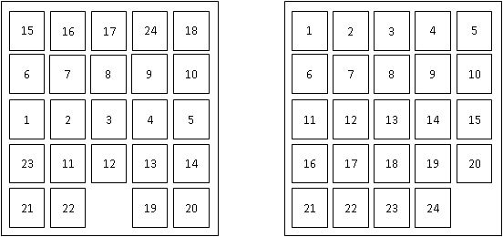

Assignment 1
Informed and Uninformed Search
Task 1
Max: [4308: 40 Points (+10 Points EC),
5360: 40 Points]
Implement a search algorithm that can find a route between any two
cities. Your program will be called find_route, and will take exactly
commandline arguments as follows:
find_route input_filename origin_city
destination_city heuristic_filename
An example command line is:
find_route input1.txt Bremen Kassel (For doing Uninformed search)
or
find_route input1.txt Bremen Kassel h_kassel.txt (For doing Informed search)
If heuristic is not provided then program must do uninformed search. Argument
input_filename
is the name of a text file such as input1.txt,
that describes road connections between cities in some part of the
world. For example, the road system described by file input1.txt can be
visualized in Figure 1 shown above. You can assume that the input file
is formatted in the same way as input1.txt:
each line contains three
items. The last line contains the items "END OF INPUT", and that is how
the program can detect that it has reached the end of the file. The
other lines of the file contain, in this order, a source city, a
destination city, and the length in kilometers of the road connecting
directly those two cities. Each city name will be a single word (for
example, we will use New_York instead of New York), consisting of upper
and lowercase letters and possibly underscores.
IMPORTANT NOTE:
MULTIPLE INPUT FILES WILL BE USED TO GRADE THE
ASSIGNMENT, FILE input1.txt
IS JUST AN EXAMPLE. YOUR CODE SHOULD WORK
WITH ANY INPUT FILE FORMATTED AS SPECIFIED ABOVE.
The program will compute a route between the origin city and the
destination city, and will print out both the length of the route and
the list of all cities that lie on that route. It should also display
the number of nodes expanded, nodes generated and max number of nodes
in the fringe. For example,
find_route input1.txt Bremen Kassel
should have the following output:
nodes expanded: 12
nodes generated: 19
max nodes in memory: 11
distance: 297.0 km
route:
Bremen to Hannover, 132.0 km
Hannover to Kassel, 165.0 km
and
find_route input1.txt London Kassel
should have the following output:
nodes expanded: 7
nodes generated: 6
max nodes in memory: 3
distance: infinity
route:
none
For full credit, you should produce outputs identical in format to the
above two examples.
The following part is required for students of CSE 5360 (It is
extra credit CSE 4308): If a heuristic file is provided then
program must perform Informed search. The heuristic file gives the
estimate of
what the cost could be to get to the given destination from any start
state (note this is just an estimate). In this case the command line
would look like
find_route inf input1.txt Munich Kassel h_kassel.txt
Here the last argument contains a text file what has the heuristic
values for every state wrt the given destination city (note different
destinations will need different heuristic values). For example, you
have been provided a sample file h_kassel.txt
which gives the heuristic value for every state (assuming kassel is the
goal).
Your program should use this information to reduce the number of nodes
it ends up expanding. Other than that, the solution returned by the
program should be the same as the uninformed version. For example,
find_route input1.txt Bremen Kassel h_kassel.txt
should have the following output:
nodes expanded: 3
nodes generated: 7
max nodes in memory: 6
distance: 297.0 km
route:
Bremen to Hannover, 132.0 km
Hannover to Kassel, 165.0 km
Suggestions
Pay close attention to all specifications on this page, including
specifications about output format, submission format. Even in cases
where the program works correctly, points will be taken off for
non-compliance with the instructions given on this page (such as a
different format for the program output, wrong compression format for
the submitted code, and so on). The reason is that non-compliance with
the instructions makes the grading process significantly (and
unnecessarily) more time consuming.
Grading
The assignments will be graded out of 50 points.
- 20 points for CSE 4308, 16 points for CSE 5360: The program always finds a route between the
origin and the destination, as long as such a route exists.
- 10 points for CSE 4308, 8 points for CSE 5360: The program
terminates and reports that no route can be found when indeed no route
exists that connects source and destination (e.g., if source is London
and destination is Berlin, in the above example).
- 10 points for CSE 4308, 8 points for CSE 5360: In addition to the above requirements, the
program always returns optimal routes. In other words, no shorter route
exists than the one reported by the program.
- 10 points EC for CSE 4308, 8 points for CSE 5360: Correct implementation of any informed search
method.
- Negative points: penalty points will be awarded by the
instructor and
TA generously and at will, for issues such as: submission not including precise and accurate instructions for
how to run the code, wrong compression format for the submission, or
other failures to comply with the instructions given for this
assignment. Partial credit for incorrect solutions will be given ONLY
for code that is well designed and well documented. Code that is badly
designed and badly documented can still get full credit as long as it
accomplishes the required tasks.
Task 2
Max: [4308: 20 Points,
5360: 15 Points]
Consider the search problem shown in Figure 1 (Task 1). Draw the first
three levels of the search tree starting from London (Consider the root
to be level 1).
Also
for the same searh problem list all the nodes visited before you
visit 5 unique cities when you start search from Dresden using the following strategies
- breadth-first search.
- depth-first search.
- iterative deepening search.
- uniform cost search.
Note: For IDS show all the iterations required. For UCS show the cumulative costs of visiting the nodes.
Task 3
Max: [4308: 15 Points,
5360: 10 Points]
A social network graph (SNG) is a graph where each vertex is a
person and each edge represents an acquaintance. In other words, an SNG
is a graph showing who knows who. For example, in the graph shown on
Figure 3, George knows Mary and John, Mary knows Christine, Peter and
George, John knows Christine, Helen and George, Christine knows Mary
and John, Helen knows John, Peter knows Mary.
The degrees of separation measure how closely connected two people are
in the graph. For example, John has 0 degrees of separation from
himself, 1 degree of separation from Christine, 2 degrees of separation
from Mary, and 3 degrees of separation from Peter.
- From among general tree search using breadth-first search,
depth-first search,
iterative deepening search, and uniform cost search, which one(s)
guarantee finding the correct number of degrees of separation between
any two people in the graph?
- If
you draw the search tree, is there a one-to-one correspondence
between nodes in the search tree and vertices in the SNG (i.e. does
every node in the search tree correspond to a vertex in the SNG)? Why,
or why
not? In your answer here, you should assume that the search algorithm
does not try to avoid revisiting the same state (You should be able to
answer the question without drawing the search tree).
- Draw an SNG containing exactly 5 people,
where at least
two people have 4 degrees of separation between them.
- Draw an SNG containing exactly 5 people,
where everybody has 1 degree of separation between them.
- In an implementation of
breadth-first tree
search for
finding degrees of separation, suppose that every node in the search
tree takes 1KB of memory. Suppose that the SNG contains one million
people. Outline (briefly but precisely) how to make sure that the
memory required to store search tree nodes will not exceed 1GB (the
correct answer can be described in one-two lines of text). In your
answer here you are free to enhance/modify the search
implementation as you wish, as long as it remains breadth-first (a
modification that, for example, converts breadth-first search into
depth-first search or iterative deepening search is not
allowed).

Figure 3: A Social Network Graph
Task 4
Max: [4308: 15 Points,
5360: 15 Points]
Figure
4. A search graph showing states and costs of moving from one state to
another. Costs are undirected.
Consider
the search space shown in Figure 4. G is the only goal state. Costs are
undirected. For each of the following heuristics, determine if it is
admissible or not. For non-admissible heuristics, modify their values
as needed to make them admissible.
Heuristic 1:
h(A) = 20
h(B) = 15
h(C) = 5
h(D) = 0
h(E) = 5
h(F) = 5
h(G) = 5
Heuristic 2:
h(A) = 20
h(B) = 20
h(C) = 20
h(D) = 20
h(E) = 20
h(F) = 20
h(G) = 20
Heuristic 3:
h(A) = 2
h(B) = 0
h(C) = 2
h(D) = 0
h(E) = 2
h(F) = 0
h(G) = 2
Heuristic 4:
h(A) = 0
h(B) = 2
h(C) = 0
h(D) = 2
h(E) = 0
h(F) = 2
h(G) = 0
Heuristic
5:
h(A) = 0
h(B) = 0
h(C) = 0
h(D) = 0
h(E) = 0
h(F) = 0
h(G) = 0
Task 5
Max: [4308: 10 Points,
5360: 10 Points]
Consider a search space, where each state can be red, green,
blue, yellow, or black. Multiple states may have the same color. The
goal is to reach any black state. Here are some rules on the successors
of different states, based on their color (these successor functions
are unidirectional):
- Red states can only have green or yellow children.
- Blue states can only have red or black children.
- Green states can only have blue or yellow children.
- Yellow states can only have yellow or red children.
- Black states can only have yellow or black children.
Define a maximally admissible heuristic that assigns a value to each state based only on the color of that state.
Task 6
Max: [4308: 10 Points EC,
5360: 10 Points]

Figure
4. An example of a start state (left) and the goal state (right) for
the 24-puzzle.
The
24-puzzle is an extension of the 8-puzzle, where there are 24 pieces,
labeled with the numbers from 1 to 24, placed on a 5x5 grid. At each
move, a tile can move up, down, left, or right, but only if the
destination location is currently empty. For example, in the start
state shown above, there are three legal moves: the 12 can move down,
the 22 can move left, or the 19 can move right. The goal is to achieve
the goal state shown above. The cost of a solution is the number of
moves it takes to achieve that solution.
For
some initial states, the shortest solution is longer than 100 moves.
For all initial states, the shortest solution is at most 208 moves.
An
additional constraint is that, in any implementation, storing a search
node takes 1KB of memory.
Consider
general tree search using the stategies of
breadth-first search, depth-first search, iterative deepening search
and
uniform cost search.
(a):
Which (if any), among those methods, can guarantee that you will never
need more than 100KB of memory to store search nodes? Briefly justify
your answer.
(b):
Which (if any), among those methods, can guarantee that you will never
need more than 1000KB of memory to store search nodes? Briefly justify
your answer.
Hint: Consider the upper and lower bounds of the amount of memory required
How to submit
The assignment should be submitted via Canvas. Submit a
ZIPPED
directory called assignment1_<net-id>.zip (no other forms
of compression
accepted, contact the instructor or TA if you do not know how to
produce .zip files). This directory should contain the following:
Put the source code for Task 1 in a subdirectory called Task1.
Including binaries is not necessary as your code will be recompiled by the TA. Also include a file called readme.txt, which
should specify precisely:
- Name and UTA ID of the student.
- What programming language is used.
- How the code is structured.
- How to run the code, including very specific compilation
instructions,
if compilation is needed. Instructions such as "compile using g++" are
NOT considered specific.
- Insufficient or unclear instructions will be penalized by
up to 10
points.
- Code that
does not run on omega machine or on the TA's or Instructor's machine gets AT MOST 75 points.
Implementations in default installations C, C++, Java and Python will
be accepted (no additional packages, toolkits or APIs can be used). If
you want to, you can also use CLISP.
If you
would like to use any other language, make sure it will compile on omega
and clear it with the instructor beforehand. Points will be taken off
for failure to comply
with this requirement.
Scan or Type the solutions for all the other Tasks together and create a single pdf titled written.pdf.
Submission checklist
Is the code in a directory called Task1?
Does the directory include a readme.txt file, as specified?
Are the solutions to remaining tasks in a pdf file titled written.pdf?
Did you zip them together into a single zip file titled
assignment1_<net-id>.zip? (where <net-id> is replaced with
your net id)
Did you upload the file on the submission page in Canvas and then click on 'Submit Assignment' to ensure that a submission is made?